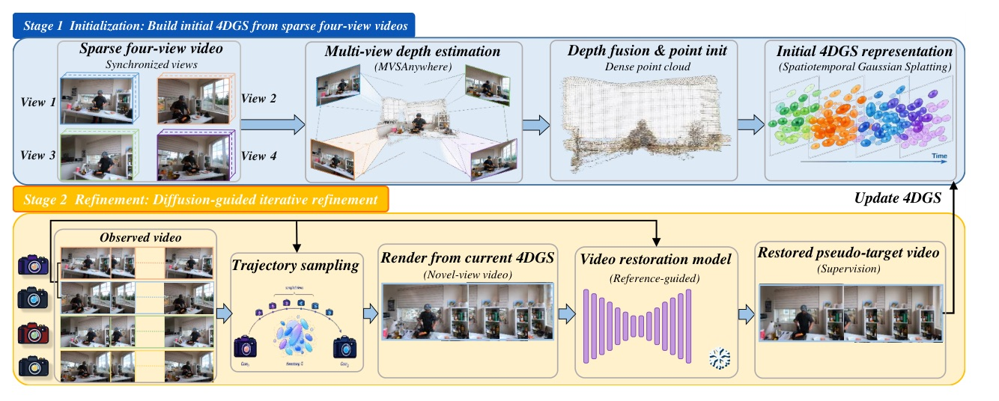

以 dense geometry + reference-guided video restoration 修補 sparse-view 4DGS。

先補齊「看得到」的幾何，再用被觀測視角錨定的 video restoration 補「看不到」的 trajectory。
不是讓 diffusion 直接替代幾何；先讓 initial Gaussian field 有足夠密的可優化支撐。
在尚未觀測到的 camera path 上，把 current render 變成「有 anchors 的 restoration task」。
4DGS-Fixer 的增益來自「把生成補全變成可反覆校正的 3D/4D constraint」，不是只對輸出影片做 post-process。
| Method | PSNR | DSSIM1 | DSSIM2 | LPIPS |
|---|---|---|---|---|
| STGS | 17.70 | 0.158 | 0.107 | 0.325 |
| 4DGS | 20.60 | 0.143 | 0.094 | 0.244 |
| 4DGaussians | 20.82 | 0.117 | 0.077 | 0.190 |
| 4C4D | 22.29 | 0.098 | 0.062 | 0.146 |
| 4DGS-Fixer | 24.18 | 0.086 | 0.053 | 0.128 |
| Method | PSNR | LPIPS | Prep. time |
|---|---|---|---|
| STGS w/ COLMAP | 17.702 | 0.325 | ~20 min |
| STGS w/ MVS | 21.674 | 0.165 | ~3 min |
| CogVideoV2V restore (init.) | 23.563 | 0.107 | - |
| Full | 24.180 | 0.128 | - |
| CogVideoV2V restore (refined) | 24.334 | 0.099 | - |
The restored sequences serve as pseudo-supervision to regularize and iteratively refine the 4DGS representation.
修復後序列不是交付物，而是用來正則化並反覆更新 4DGS 表示的偽監督。
這句話決定了整篇的讀法：diffusion 是 training signal generator，4DGS 才是被持續更新的場景模型。
We therefore cache the restored videos and reuse them for multiple optimization steps.
因此作者快取修復後影片，並在多個 optimization steps 重複使用。
Dense geometry + anchored video diffusion pseudo-supervision + iterative 4DGS distillation